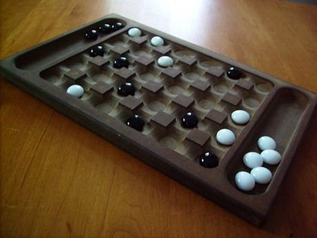

Home / Crossroads and Golden Ages / Africa: Sahel, West and Central
Encyclopedia ID 167
Yote Capture Grid
Also known as Yoté

Players drop 12 pieces one at a time onto a 5x6 grid, move one step, and jump an enemy to capture it plus a bonus second piece of choice taken from anywhere.
Heritage note
Part of the living heritage of Senegal, Mali, Burkina Faso.
Origins
Usually placed in the era of Crossroads and Golden Ages (about 500 to 1500), although its exact origins are uncertain, within the cultural world of Africa: Sahel, West and Central.
Play it
Sources
Related entries


More from Senegal

Dakar Car Rapide Livery Painter
Senegal · Crafts and making

Laamb Wrestling Bout
Senegal +1 · Wrestling and martial sportsPlay preview · in the Sports & Skill of the World app